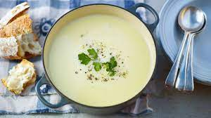

Potato Soup

Description
Warming winter potato soup
Ingredients
- 3 large potatoes
- 1 tsp salt
- 100g of butter
- handful of parsley
- 500ml full cream
- 30g of parmesan cheese
- 300ml boiling water
Steps
- On a medium heat, melt 100g of butter in a large pot
- Peel and dice potatoes
- Add diced potatoes to pot, fry potatoes for 2 minutes, then add boiling water, simmer until soft
- Once potatoes are soft, add full cream and parmesan
- Once soup has returned to a simmer, blend all ingredients with stick blender until smooth
- Add diced parsley and garnish with grated parmesan cheese